전자산업기사 (2019-03-03 기출문제)
1과목: 전자회로
1. 진폭변조(DSB) 방식에서 변조도를 90%로 하면 피변조파의 전력은 반송파 전력의 약 몇 배 인가?
- 1.1
- 1.4
- 1.6
- 2.1
(정답률: 74%)

2. 이상적인 다이오드는 무엇으로 나타낼 수 있는가?
- 전압원
- 전류원
- 저항
- 스위치
(정답률: 79%)
3. 주파수 변조에 사용되는 프리-엠퍼시스 회로에 대한 설명으로 틀린 것은?
- 일반적으로 주파수 변조회로 앞 단에 설치한다.
- 간단한 R, C 소자로서도 구성이 가능하다.
- 주파수 특성은 저역여파기의 특성과 비슷하다.
- 신호대 잡음비를 높이기 위하여 사용한다.
(정답률: 55%)
4. 전원전압 9V, si 다이오드 5개와 부하 RL을 직렬로 연결하여 회로를 설계할 경우 부하 RL에 걸리는 전압은? (단, si 다이오드는 0.7V로 바이어스, 폐루프로 가정한다.)
- 0.7V
- 3.5V
- 5.5V
- 9V
(정답률: 72%)
5. 다음 회로에서 VO는? (단, R1 = R2 = R3 = R4 이다.)
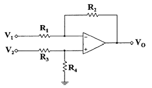
- VO = V1
- VO = V2
- VO = V1 - V2
- VO = V2 - V1
(정답률: 84%)
6. 트랜지스터의 차단과 포화영역을 사용하면 수행 가능한 소자로 가장 적합한 것은?
- 선형 증폭기
- 스위치
- 가변저항
- 다이오드
(정답률: 77%)
7. 다음 그림과 같이 VGS(off)=-4V, IDSS=12mA인 JFET가 있다. 일정한 영역에서 동작하기 위한 VDD의 최솟값은?
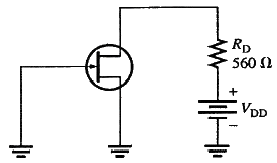
- -4V
- 4V
- 6.72V
- 10.72V
(정답률: 57%)
8. 어떤 증폭기의 전압증폭도가 200일 때 전압이득은 약 몇 dB 인가?
- 25
- 35
- 46
- 86
(정답률: 74%)
9. 사용 주파수가 높아짐에 따라 동일한 트랜지스터에서 주파수에 따른 이득이 감소하는 이유는?
- 접합용량에 의한 신호 누설 때문
- 반도체의 유전율이 변하기 때문
- 반도체의 불순물이 증가하기 때문
- 주파수에 따른 저항의 증가 때문
(정답률: 62%)
10. 부궤환(Negative feedback)의 4가지 형식 설명 중 틀린 것은?
- 입력전압이 출력 저항치를 제어하는 부궤환 형식을 사용하는 회로를 전압제어 전류원(VCIS)이라 한다.
- 입력전압과 출력전압을 가지며 이와 같은 형식을 사용하는 회로를 전압제어 전압원(VCVS) 이라 한다.
- 입력전류가 출력전압을 제어하는 부궤환 형식을 사용하는 회로를 전류제어 전압원(ICVS) 이라 한다.
- 보다 큰 전류를 얻기 위해 입력 전류를 증폭하는 부궤환 형식을 사용하는 회로를 전류제어 전류원(ICIS) 이라 한다.
(정답률: 60%)
11. 궤환증폭기의 특징에 대한 설명으로 옳은 것은?
- 부궤환증폭기는 이득이 감소하고 회로가 안정하다.
- 부궤환증폭기는 이득이 증가하고 회로가 불안정하다.
- 정궤환증폭기는 이득이 증가하고 회로가 안정하다.
- 정궤환증폭기는 이득이 감소하고 회로가 안정하다.
(정답률: 73%)
12. 그림과 같은 단안정 멀티바이브레이터에서 트랜지스터 Q2가 ON(포화)상태에서 OFF(차단)상태로 되었다가 다시 ON 상태로 되는데 걸리는 동작시간 T는?
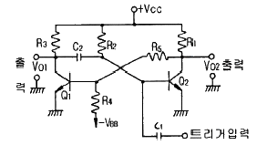
- T = R1C2 ln(2)
- T = C2R3 ln(2)
- T = C1R2 ln(2)
- T = C2R2 ln(2)
(정답률: 68%)
13. 전력 증폭기의 직류 공급전력은 20V, 200mA 이고, 부하에서의 출력전력은 1.8W일 때, 이 증폭기의 효율은?
- 75%
- 80%
- 85%
- 90%
(정답률: 62%)
14. 다음 연산증폭기 회로에서 RL에 흐르는 전류가 5mA일 때 RL값은 몇 ㏀ 인가?
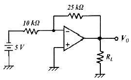
- 2.5
- 4
- 5
- 7.2
(정답률: 77%)
15. 다음 여파기 회로의 주파수 특성은?
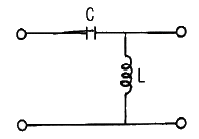
- 저역통과특성
- 고역통과특성
- 대역통과특성
- 대역저지특성
(정답률: 72%)
16. 연산증폭기에 관한 설명으로 옳은 것은?
- 입력단자는 반전 입력(+)과 비반전 입력(-) 두 개가 있다.
- 이상적인 연산증폭기의 주파수 대역폭은 매우 좁아 선택도가 매우 뛰어나다.
- 이상적인 연산증폭기의 출력임피던스는 무한대의 값을 갖기 때문에 버퍼회로에 이용된다.
- 연산증폭기는 선형 집적회로로 동작 전압이 낮고 신뢰도가 매우 높다.
(정답률: 62%)
17. 700kHz인 반송파를 2000Hz로 100% 진폭변조 하였을 때 점유 주파수 대역은?
- 2000Hz ~ 700kHz
- 700kHz ~ 702kHz
- 698kHz ~ 702kHz
- 700kHz ~ 700kHz
(정답률: 79%)
18. R=1㏁, C=0.1㎌인 RC직렬회로의 양단에 10V의 전압을 가한 뒤 R 양단의 전압이 3.68V가 되는 시간은 얼마인가?
- 1ms
- 3.68ms
- 100ms
- 638ms
(정답률: 52%)
19. FET는 전압-가변저항(VVR)으로 사용할 수 있는데 이에 대한 설명으로 틀린 것은?
- 출력특성의 포화영역에서 행하여진다.
- Pinch-off 에 이르기 전의 출력 특성에서 행하여진다.
- VGS 전압에 비례한다.
- AGC 회로 등에 이용된다.
(정답률: 49%)
20. 크로스오버(crossover) 일그러짐이 발생하는 전력증폭기는?
- A급
- B급
- C급
- AB급
(정답률: 77%)
2과목: 전기자기학 및 회로이론
21. 20×10-6C의 양전하와 –8×10-8C의 음전하를 갖는 대전체가 비유전율 2.5의 기름 속에서 5cm 거리에 있을 때 이 사이에 작용하는 힘(N)은?
- 반발력 2.304N
- 반발력 4.068N
- 흡인력 2.304N
- 흡인력 4.068N
(정답률: 64%)
22. 5C의 전하가 비유전율 εs = 2.5 인 매질 내에 있다고 하면 이 전하에서 나오는 전체 전기력선의 수는 몇 개인가?
- 5/εo
- 2/εo
- 1/εo
- 25/εo
(정답률: 64%)
23. 평등 전계 내에 수직으로 비유전율 εs = 2인 유전체 판을 놓았을 경우, 판 내의 전속밀도가 D = 4×10-6(C/m2)이었다. 유전체 내의 분극의 세기 P(C/m2)는?
- 1×10-6
- 2×10-6
- 4×10-6
- 8×10-6
(정답률: 56%)
24. 공기 중에서 E(V/m)의 전계를 id(A/m2)의 변위전류로 흐르게 하려면 주파수 f(Hz)는?
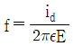
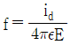
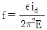
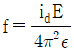
(정답률: 48%)
25. 철심이 든 환상 솔레노이드에서 2000AT의 기자력에 의하여 철심 내에 4×10-5Wb의 자속이 통할 때 이 철심의 자기저항은 몇 AT/Wb 인가?
- 2×107
- 3×107
- 4×107
- 5×107
(정답률: 48%)
26. 실용상 영(zero) 전위의 기준으로 옳은 것은?
- 대지
- 자유공간
- 철제부분
- 무한원점
(정답률: 70%)
27. 코일 권수를 2배로 늘리면 인덕턴스(H)는 어떻게 되는가? (단, 코일 권수를 늘리기 전의 인덕턴스는 L(H)이다.)
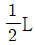
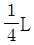
- 2L
- 4L
(정답률: 58%)
28. 동심 구형 콘덴서의 내외 반지름을 각각 5배로 증가시키면 정전용량은 몇 배로 증가하는가?
- 1
- 3
- 5
- 10
(정답률: 69%)
29. 자계 내에서 도선에 전류가 흐르고 있다. 도선을 자계에 대해 60˚의 각으로 놓았을 때 작용하는 힘은 30˚의 각으로 놓았을 때 작용하는 힘의 몇 배인가?
- √2
- 2
- √3
- 4
(정답률: 60%)
30. 두 개의 똑같은 작은 도체구를 접촉하여 대전시킨 후 1m 거리에 떼어 놓았더니 작은 도체구는 서로 9×10-3N의 힘으로 반발하였다. 각 전하는 몇 C 인가?
- 10-2
- 10-4
- 10-6
- 10-8
(정답률: 60%)
31. 50㎌의 콘덴서에 100V, 60Hz의 교류전압을 인가할 때 무효전력의 크기는 얼마인가?
- -30πVar
- -60πVar
- -90πVar
- 30πVar
(정답률: 59%)
32. 다음 중 RL 직렬 회로에서 시정수는?
- R/L
- RL
- L/R
- 1/RL
(정답률: 67%)
33. 다음 회로망 함수에서 분모 q(s) = 0을 만족시키는 근들은?
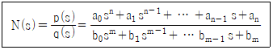
- 감쇄정수이다.
- 위상정수이다.
- 극(pole)이다.
- 영점(zero)이다.
(정답률: 61%)
34. 다음 회로에서 R2에 흐르는 전류는 몇 A인가?
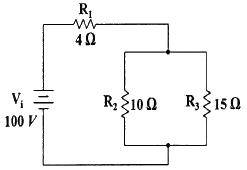
- 2
- 3
- 5
- 6
(정답률: 60%)
35. 다음 중 3상 교류 회로에서 Δ결선을 Y결선으로 바꿀 경우 해당되지 않는 것은?
- 어드미턴스가 1/3이 된다.
- 전류가 1/3이 된다.
- 전력이 1/3이 된다.
- 임피던스가 1/3이 된다.
(정답률: 63%)
36. 그림과 같은 회로로 입력 파형을 미분하기 위한 입력 파형의 주기 T와 회로의 시정수 RC 사이의 조건은?
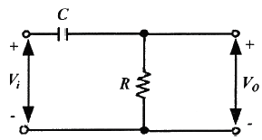
- T 》RC
- T《 RC
- T = RC
- T ≤ RC
(정답률: 69%)
37. 전송파라미터(ABCD 파라미터)에서 AD-BC=1의 관계가 성립되는 이유로 적당하지 않은 것은?
- 가역성 회로이므로
- 트랜지스터 회로이므로
- 수동소자 회로이므로
- 이상 변압기 회로이므로
(정답률: 55%)
38. E(V)의 전압을 라플라스 변환하면?
- E
- E2
- Es
- E/s
(정답률: 69%)
39. 복소수 3+j4의 위상은?
- 0.9˚
- 53.1˚
- 36.9˚
- 0.6˚
(정답률: 73%)
40. 내부임피던스가 순저항 50Ω인 전원과 800Ω의 순저항 부하 사이에 임피던스의 정합을 위한 이상변압기의 권선비 N1 : N2 는?
- 1:2
- 1:3
- 2:3
- 1:4
(정답률: 66%)
3과목: 전자계산기일반
41. 다음 논리식 중 틀린 것은?
- x+yz = (x+y)(x+z)
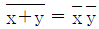
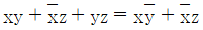
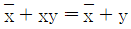
(정답률: 66%)
42. 주소는 자료에 접근하는 방법에 따라 분류할 수 있다. 다음 중 주소지정방식에 해당되지 않는 것은?
- Direct Address
- Stack Address
- Indirect Address
- Immediate Address
(정답률: 69%)
43. 다음 보조기억장치 중 접근방식이 다른 것은?
- DVD-ROM
- Solid State Drive
- Magnetic Tape
- Hard Disk
(정답률: 71%)
44. 3-초과 코드(Excess-3 code)에서 10진수 1에 해당하는 것은?
- 0011
- 0100
- 0101
- 0110
(정답률: 70%)
45. 마이크로 오퍼레이션에 대한 설명으로 가장 적합한 것은?
- 마이크로프로세서가 수행하는 하나의 동작
- 마이크로프로세서가 동작할 수 있도록 제어하는 펄스
- 제어장치가 명령어를 해독하는 것
- 명령수행을 위하여 CPU가 의미 있는 변환을 하도록 하는 동작
(정답률: 54%)
46. 2-주소 기계에서 기억 용량이 65536=216이고, 워드 길이가 40비트라면 명령어에 대한 명령 코드의 비트(bit)는?
- 9
- 8
- 7
- 6
(정답률: 65%)
47. 프로그램 언어로 프로그램 코드를 작성하는 것을 무엇이라 하는가?
- Debugging
- Flowchart
- Coding
- Execute
(정답률: 82%)
48. 8개의 플립플롭으로 된 시프트 레지스터(Shift Register)에 10진수로 64가 기억되어 있을 때 이를 오른쪽으로 3비트만큼 산술 시프트하면 그 값은?
- 4
- 8
- 12
- 24
(정답률: 69%)
49. 스택 주소를 갖고 있는 어드레스 방식은?
- 0-주소방식
- 1-주소방식
- 2-주소방식
- 3-주소방식
(정답률: 70%)
50. 길이, 각도, 속도, 전압, 전류 등과 같이 연속적으로 변화하는 물리적인 양의 데이터를 처리하며 처리 결과가 보통 곡선이나 그래프 등으로 출력되는 유형의 컴퓨터는?
- 디지털 컴퓨터
- 하이브리드 컴퓨터
- 범용 컴퓨터
- 아날로그 컴퓨터
(정답률: 70%)
51. 전가산기(full adder)에서 합을 나타내는 논리식은?
- S = (A ⊕ B) ⊕ C
- S = (A ⊕ B) · C
- S = (A + B) ⊕ C
- S = A ⊕ (B + C)
(정답률: 66%)
52. 다음 그림과 같은 연산이 수행되는 경우 ALU의 기능은?
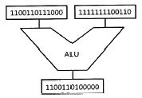
- 덧셈
- 뺄셈
- OR
- AND
(정답률: 75%)
53. 논리회로, 누산기, 가산기, 보수기를 이용하여 구성되는 컴퓨터의 장치는?
- 입력장치
- 출력장치
- 연산장치
- 제어장치
(정답률: 82%)
54. 컴퓨터의 입·출력 및 처리 속도를 향상시키기 위한 목적과 관계없는 것은?
- Cache Memory
- DMA(Direct Memory Access)
- PLA(Programmable Logic Array)
- CAM(Content Addressable Memory)
(정답률: 66%)
55. 마이크로컴퓨터의 구성에서 memory-mapped I/O와 isolated I/O방식에 대한 설명 중 옳은 것은?
- memory-mapped 입출력에는 입출력 전용명령어가 필요 없다.
- isolated 입출력은 버스 연결이 쉽다.
- memory-mapped 입출력은 주기억 공간을 최대로 활용할 수 있다.
- isolated 입출력은 프로그래밍에서 기억장치 관련 명령어들을 입출력장치 제어에도 사용이 가능하다.
(정답률: 57%)
56. 마이크로컴퓨터의 입·출력부 구성 요소가 아닌 것은?
- 데이터 전송로
- 인터페이스 회로
- 입·출력 제어 회로
- 채널
(정답률: 62%)
57. 0101000 – 1101101의 2진수 뺄셈 연산을 2의 보수를 이용하여 계산하면 10진수로 얼마인가?
- -49
- -59
- -69
- -79
(정답률: 69%)
58. 인터럽트 요청의 상태를 조절할 수 있는 기능을 보유한 것은?
- 마이크로 레지스터
- 패리티 에러
- 인터럽트 코드
- 상태 레지스터
(정답률: 61%)
59. 플립플롭의 종류가 아닌 것은?
- JK
- SR
- S
- T
(정답률: 72%)
60. 터미널과 컴퓨터 사이의 통신에 필요한 것은?
- 모뎀, 데이터 셋
- 카드리더, 프린터
- 유선 무전기, 무선 무전기
- 누산기
(정답률: 77%)
4과목: 전자계측
61. 직류 전압을 정밀하게 측정하고자 할 때 필요한 계기는?
- 가동철편형
- 진동검류계
- 직류전위차계
- 오실로스코프
(정답률: 66%)
62. 참값을 T, 측정값을 M 이라고 할 때 보정(α)을 나타내는 식은?
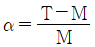
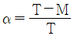
- α = M - T
- α = T - M
(정답률: 56%)
63. 다음 브리지에서 평형 되었을 때 C1은 몇 ㎌인가? (단, R1=200Ω, R2=100Ω, C2=1㎌ 이다.)
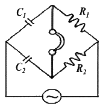
- 0.5
- 2
- 5
- 50
(정답률: 52%)
64. 리사주 도형으로 신호의 주파수를 측정할 수 있는 계기는?
- 가동코일형 전류계
- 전류력계형 계기
- 오실로스코프
- 열전대형 계기
(정답률: 76%)
65. 계수형 주파수계로 측정할 수 없는 것은?
- 주기
- 고주파 진폭
- 분주비
- 주파수
(정답률: 68%)
66. 오실로스코프 모니터에 표시된 신호파형의 주기가 10㎲이다. 이 신호의 주파수는?
- 100kHz
- 10kHz
- 10MHz
- 1MHz
(정답률: 36%)
67. 가동철편형 계기에 대한 설명 중 옳지 않은 것은?
- 눈금은 실효치로 되어 있다.
- 전압계보다는 전류계로 많이 쓰인다.
- 흡입형, 반발형 및 흡입 반발형이 있다.
- 직류 전용이다.
(정답률: 64%)
68. 2개의 파형을 CH1과 CH2가 번갈아 가면서 주사하도록 스위칭 하는 것을 무엇이라 하는가? (단, 2현상 스코프의 경우로 가정한다.)
- chopper switching
- alternate switching
- delay sweep
- smith trigger
(정답률: 60%)
69. 소인 발진기(sweep generator)에서 발생시키는 신호는?
- 톱니파
- 구형파
- 정현파
- 펄스파
(정답률: 59%)
70. 아날로그 멀티미터로 측정할 수 없는 것은?
- 저항
- 전압
- 다이오드 도통
- 주파수
(정답률: 71%)
71. 정현파 파형을 계수에 알맞은 구형파의 펄스로 바꾸는 역할을 하는 회로는?
- A/D 변환기 회로
- D/A 변환기 회로
- 파형 정형 회로
- 검파 회로
(정답률: 58%)
72. 다음 아날로그 멀티미터의 측정계 중 균등눈금만을 사용하는 계기는?
- 전류계
- 전압계
- 저항계
- 전압계, 전류계, 저항계
(정답률: 55%)
73. 주파수 합성기에 사용되는 PLL 시스템의 주요 구성 요소가 아닌 것은?
- 전압제어발진기(VCO)
- 분주기
- 고역통과필터
- 위상검출기
(정답률: 51%)
74. 버터플라이(butterfly)형 주파수계의 특징이 아닌 것은?
- 측정주파수 범위가 넓다.
- Q가 50정도이다.
- VHF-UHF대 주파수 측정에 적합하다.
- 회전자와 고정자로 LC공진회로를 이루어 주파수를 측정한다.
(정답률: 68%)
75. 전력 증폭기에서 출력 저항을 측정하는 주된 이유는?
- 전류이득을 계산하기 위해서
- 전압이득을 계산하기 위해서
- 부하저항과의 정합을 이루기 위해서
- 주파수응답 특성을 알기 위해서
(정답률: 67%)
76. 주파수 계수기(frequency counter)의 구성에서 계수부의 회로는?
- 단안정 회로
- 클리퍼 회로
- 플립플롭 회로
- 리미터 회로
(정답률: 70%)
77. 전하량을 측정하는 단위로 옳은 것은?
- C
- V
- F
- R
(정답률: 81%)
78. 펄스의 반복주파수가 1kHz, 진폭 5V, 펄스폭이 10㎲ 일 때 펄스의 Duty factor(D)는 얼마인가?
- 0.1
- 0.01
- 0.001
- 0.0001
(정답률: 49%)
79. 코올라시 브르지 회로로 A, B는 저항이 균일한 도선이다. 검류계의 AC : CB = 3 : 5되는 C점에서 0을 가리켰을 경우, 전지의 내부저항 rB는 몇 Ω인가? (단, R=50Ω이다.)
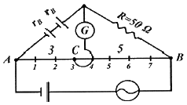
- 15
- 30
- 41
- 33
(정답률: 50%)
80. 정전용량 CV인 정전형 전압계에 용량 C인 콘덴서를 직렬로 연결하고 전압을 측정하여 V1의 지시를 읽었다. 입력 전압의 크게 V는?
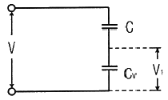
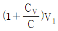
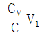
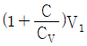
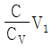
(정답률: 52%)